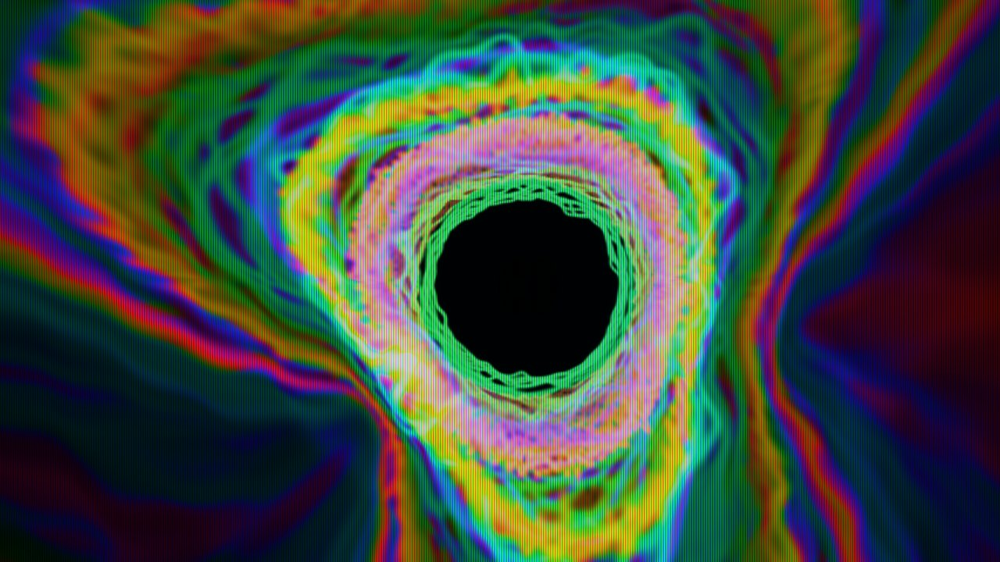
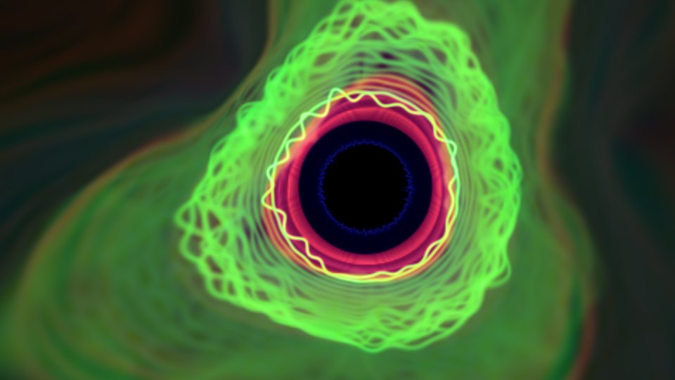
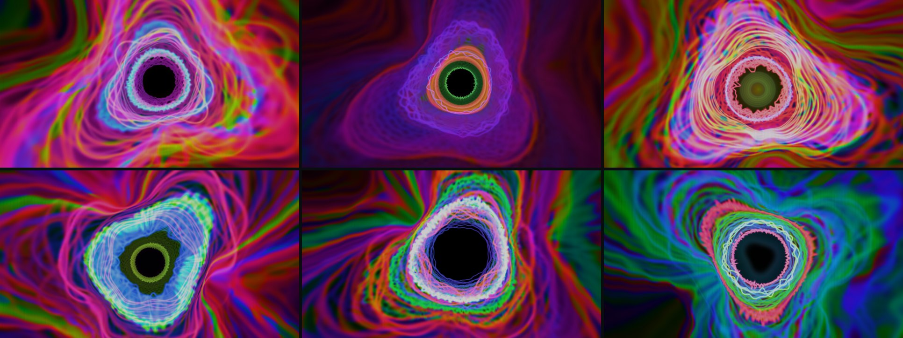
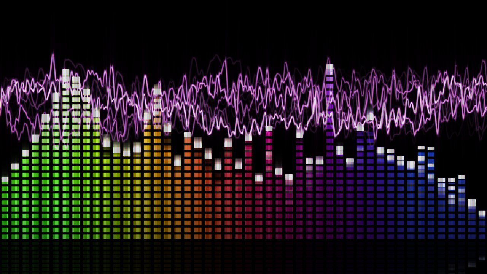

What does it actually take for a visualizer to follow a song — not just flash with how loud it is?

Why Rebuild It
In the early 2000s, Windows Media Player came with visualizers — Battery most of all — and a lot of people spent a lot of evenings watching tunnels of colour pulse along to whatever was playing. I wanted that back. Not a video of it: the real thing, running on my own machine, reacting to anything the computer plays — a YouTube video, a Spotify playlist, a Discord call.
It started as a weekend experiment and turned into a short course in the gap between reacting to music and following it.
What It Does
The main view is a Feedback Tunnel. Every frame is the previous frame carried outward from a vanishing point, with new light drawn at the mouth; what you see as the tunnel walls is the recent past of the song flowing past you.
The light at the mouth is the music itself: three rings, each one the live waveform of part of the sound — the cymbals and hats, the mid range where snares, vocals and guitars live, and the bass. Each ring stands on its own circle and rises outward with its instrument’s level, like a spectrum bar bent into a circle. When one instrument takes over — a snare crack, a held vocal, a drum fill — its ring swells, its trails glow longer than the others’, and the hardest accents set off a flash at the centre.

The tunnel bends rather than spins — the vanishing point drifts as though the tube curves ahead of you — and the colours travel through the spectrum like light on an oil film, one colour per ring at a time. A second view is a classic spectrum-and-oscilloscope display, drawn in the same colours so each instrument looks the same in both.


Listening
The program captures what the computer is playing directly from the audio output, so it works with anything and needs no setup. From that it builds a beat clock: an estimate of the tempo, and of where in the beat the song is right now, so that motion can land on the beat rather than just after it.
The first version of that clock was nearly perfect — on a clean test track I had generated for it. On the first real song I recorded, it changed its mind about the tempo every few seconds and lurched by a quarter of a beat at a time. Each fix I made against the test track made real music worse: a correction for hi-hats confusing the timing worked on the synthetic drums and, on a real mix, locked the clock onto the bass line instead of the beat.
What fixed it was measuring against recorded songs instead of the test signal, and listening to the sound the way the ear does — in bands spaced like pitch, rather than in equal slices of frequency where cymbal noise outvotes everything else. On a steady studio track, every beat the clock places now lands within 50 milliseconds of the song’s own beat. A song whose tempo pushes and pulls still beats it; that one is honestly unsolved.
Designing Against Complaints
Most of the design came from watching it and saying what was wrong: it pulses like a heartbeat, the colours are muted, it feels dim, it’s flashing, the spinning makes me dizzy. Each complaint was turned into a measurement before anything was changed, and several of them turned out to mean something other than what they first seemed to.
- “Pulses like a heartbeat.” The motion was locked to the beat and identical on every beat. The fix split the job: the beat decides when things move; the music decides how — a hard kick surges, a soft one barely moves, a snare throws its ring outward.
- “It feels dim.” Measured by the brightest colour channel, the picture was already bright. Measured the way the eye sees it, it was not: saturated blues and violets look dark even at full strength. The fix was a tone curve on perceived brightness and white-hot cores on loud lines.
- “It’s flashing.” Whole-screen brightness changes read as flashing, however musical. Moving that response into the traces themselves cut the worst frame-to-frame jumps about ninefold.
- “It doesn’t feel like a tunnel.” Everything was fading with time on screen. Fading instead with distance travelled, like fog, keeps the walls lit and made the look independent of how fast the tunnel moves.
Download
Retro Visualizer is a free Windows program. Download it, double-click it, play some music.
Version 1.1 · 26 MB · Windows 10 or later with an OpenGL 3.3 graphics card (practically any PC from the last decade). The program is not code-signed, so the first time you run it Windows may say “Windows protected your PC” — click More info, then Run anyway. If your antivirus objects to the single file, the .zip version usually doesn’t: unzip it and run RetroVisualizer.exe inside.
| Key | Action |
|---|---|
| 1 / 2 | Tunnel / bar view |
| F | Fullscreen (Esc leaves it) |
| P | Colour mode: oil-spill or palettes |
| C | CRT effect: off, scanlines, full CRT |
| D | Next audio input device |
| [ ] | Nudge the timing if it looks early or late (wireless headphones add delay) |
How It Was Built
The code was written in conversation with an AI coding assistant over a weekend; the decisions about what it should look and feel like, and the verdicts on every version, were mine. It runs on Python and the graphics card, and captures sound through Windows’ own audio loopback. Every approved version was saved before the next change was tried — which mattered, because several changes that sounded right were rolled straight back after one look.
Related Work
Timing, noisy sensors and control on real hardware — the same lesson that a clean test signal hides the real problem.
Measure before changing anything: most of the fixes here came from finding out what a complaint actually meant.
Another project that was confidently wrong first and corrected by contact with the real thing.